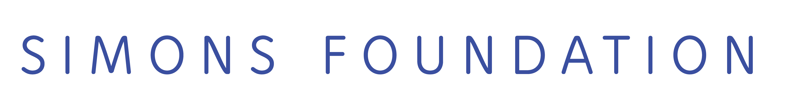

A workshop at ENS Paris, October 26-28,
2017 Organisers: Elisabeth
Agoritsas and Francesco Zamponi Speakers:
This workshop will be focused on the yielding of amorphous materials under load. Related topics such as plasticity, avalanches, and jamming will be discussed. Final program (location: room Conf IV - E244 at the second floor of the ENS physics building at 24 Rue Lhomond, Paris) Thursday 26 14:50 Opening 15:00 Jean-Louis Barrat 16:30 Discussion time Friday 27 9:00 Discussion time 10:30 Itamar Procaccia 12:30 Lunch break 14:00 Pierfrancesco Urbani 15:30 Hajime Yoshino Saturday 28 9:00 Discussion time 10:30 Ludovic Berthier 12:30 Lunch break 14:00 Edan Lerner 16:00 End of the workshop Practical information: There are no registration fees, however registration is mandatory before Sept. 15, for organisational reasons. In order to register, please write an email entitled "Workshop yielding" to elisabeth.agoritsas AT lpt.ens.fr, indicating your name and affiliations. Simons Collaborations, made possible by support from the Simons Foundation, bring together groups of outstanding scientists to address mathematical or theoretical topics of fundamental scientific importance in which a significant new development has created a novel area for exploration or provided a new direction for progress in an established field. |